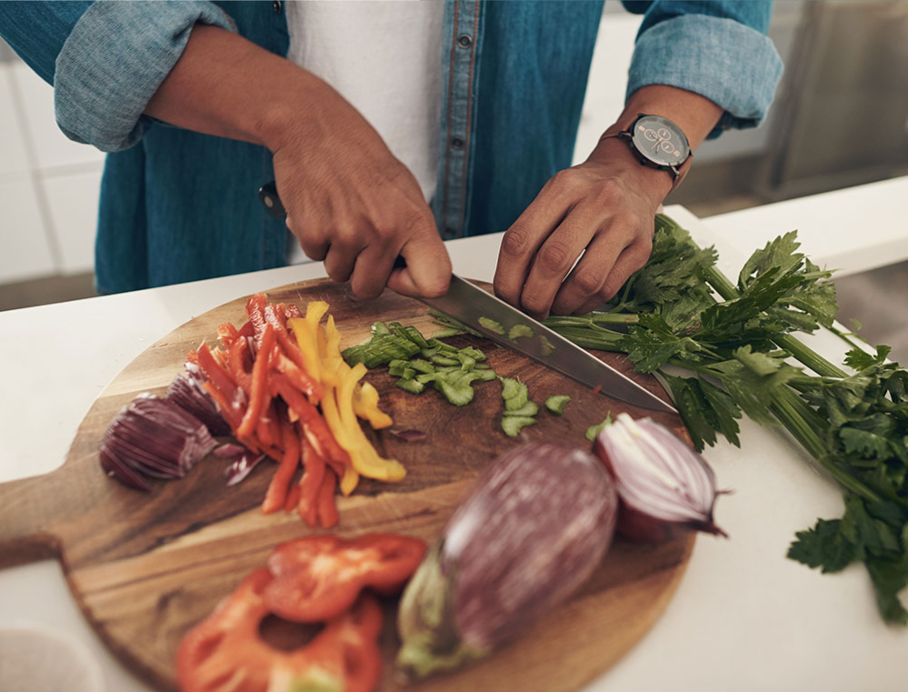

Unlike common diet platforms, Veye emphasizes small but impactful long-term health improvements over short-term goals that often fall short. We cater to individuals with chronic conditions, equipping them with the analytics, resources, and guidance needed to use food as medicine for managing weight loss, diabetes, autoimmune conditions, hormonal imbalances, and more.
Veye’s platform empowers you to make informed decisions about your health. You’ll have access to extensive insights and data, along with a team of expert nutritionists, doctors, and supportive staff, ensuring your journey is a success story. Additionally, our community forums and personalized coaching offer ongoing support, making it easier to stay motivated and achieve your health goals.
At Veye, we believe in the power of holistic, natural solutions to enhance your quality of life. Join us and experience a tailored approach to health that truly makes a difference.
Food as Medicine
Veye arms people with resources, support, and guidance to use food as medicine against their chronic illnesses. We tailor nutritional programs that target the source of chronic disease, and optimize health and longevity. Veye will help you harness the power of food.
Control your hormones
Breakthrough approach leveraging daily nutritional habits to combat inflammation. Hormones control health in the body and we control hormones with food. Veye helps you balance carbohydrates, proteins and fats to maximize hormonal efficiency and improve your health. Resolve and repair damage caused by inflammation, remove senescent cells to improve the aging process.

Systems Biology
PI3-kinase, AMPK, and mTOR are the keys to metabolism and health. Veye understands that nutrition has changed from counting calories (which didn’t work) to focusing on the interplay of these three factors. No other on-line program understands and uses these scientific advances to optimize your health, using only the food you already like and eat.
What customers are saying!
Veye is a beautiful program. I was not ready to make drastic changes in my food habits. Veye worked with me at my pace, first making the foods I already eat healthier, then guiding me to eat healthier foods. I never felt rushed or overwhelmed. My blood markers improved within three months, and within one year I was free of hypertension and diabetes. I still use the Veye platform, it has a wealth of support and information.
Lisa K
Miami, FL
I tried other programs, including fasting, to lose weight and lower my cholesterol. Eventually they all failed, counting calories or points never felt good. Veye taught me why food combining is important, how to read food labels, and pick healthy options instead of starving. The online coaching gave fast feedback, and answered all my questions. I make real food choices rather than buying expensive pre-packaged meals.
Matt J
Houston, TX
Who knew that low calorie could be so much food! I love to eat, and I don’t have to cut down on quantity with the Veye program. There are all these super favorable foods I can eat first and in large quantities, then I have some dessert. I am not giving up anything, only changing the ratios. Goodbye deprivation.
Jenna A
New Orleans, LA
To sum up my experience — stable energy, less hunger, fewer restrictions, easy to implement methods, great results. I am healthier and happier, my mood is improved, and my family couldn’t be happier. Thank you Veye for bringing me back to my best self.
Logan M
Los Angeles, CA
Disclaimer: To protect client privacy names, images, and content/statements has been edited, however they are indicative of a typical interaction between our clients and our team.